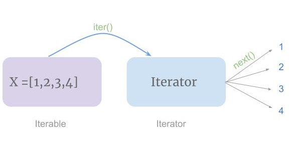

Keyboard shortcuts:
N/СпейсNext Slide
PPrevious Slide
OSlides Overview
ctrl+left clickZoom Element
If you want print version => add '
?print-pdf' at the end of slides URL (remove '#' fragment) and then print.
Like: https://wwwcourses.github.io/...CourseIntro.html?print-pdf
Iterators and Generators in Python
Created for
Iva E. Popova, 2016-2024,

Iterators
Iterators
Why are iterators so special?
- Efficiency: Unlike loading the entire buffet onto your plate (list) at once, iterators fetch each dish (element) as needed. This is particularly useful for large datasets, where loading everything upfront could be slow and resource-intensive.
- Memory Conservation: Just like you don't need to carry all the food at once, iterators don't hold the entire collection in memory. They only remember the current dish (element) and where to find the next one, saving valuable memory for other tasks.
- Lazy Evaluation: Think of a buffet where dishes are prepared only when you ask for them. Iterators are similar – they only generate elements when you request them, making them ideal for infinite or very large sequences where you might not need everything.
Iterators and Iterables
-

- An iterator is an object that knows how to return items from a collection, one at a time, while keeping track of its current position within that collection. It must implements next method:
__next__()that returns the next item of the sequence. On reaching the end, it should raise the StopIteration exception.__iter__()that returns the iterator object itself. This is required to allow both iterables and iterators to be used with theforandinstatements.- An iterable is an object, that implements the method:
__iter__()that returns iterator object- Iterables are used directly with
forloops. Iterators are what Python uses under the hood to loop over these iterables.
{kind=link}
iterator and the __next__ method
iteratoris any object, implementing the__next__method- When
__next__method is called, the iterator should return its "next value". - If the iterator has no more values to return, it should raise a StopIteration exception
- There is a built-in function called
next, wrapping around__next__that you can use for convenience. next(it)is equivalent toit.__next__()- Example:
numbers = [1, 2, 3]
iterator = iter(numbers) # Create an iterator from the list
print(next(iterator)) # Output: 1
print(next(iterator)) # Output: 2
print(next(iterator)) # Output: 3
print(next(iterator)) # Raises StopIteration because there are no more items
iterable and the __iter__ method
- itarable is an object, implementing the
__iter__method - The
__iter__method returns an iterator. - The built-in function
iter()can also be used to get an iterator from iterable. - Every sequence in Python is iterable. But there are other iterable types, which are not sequences, like
setsor user-defined iterators.
Custom Iterator Types
- You can create custom iterator by defining class with __iter__() and __next__() methods.:
__iter__()is often straightforward, usually returning self.__next__()holds the logic for generating or retrieving elements and signaling the end of iteration.
class NumberIterator():
"""Simple Number Iterator, which can iterate on only two values - 1 and 2."""
def __init__(self, start, end):
self.current = start
self.end = end
# define NumberIterator as Iterable
def __iter__(self):
return self
def __next__(self):
# generate a number to return
if self.current > self.end:
raise StopIteration
value = self.current
self.current += 1
return value
# use our custom iterator:
for number in NumberIterator(2,4):
print(number, end=",")
# 2,3,4,
Custom Iterator on Fibonacci Sequence - example
Fibonacci Sequence @wikipedia
class Fibonacci():
def __init__(self, end):
self.prev = 0
self.next = 1
self.end = end
def __iter__(self):
return self
def __next__(self):
value = self.prev
if value > self.end:
raise StopIteration
self.prev, self.next = self.next, self.prev+self.next
return value
# use our custom iterator:
for number in Fibonacci(20):
print(number, end=",")
# 0,1,1,2,3,5,8,13,
Generators
Generators
Overview
- Generators are special functions that return iterators instead of regular values.
- They produce values "on demand" using the
yieldkeyword, creating them one at a time. - Or more formally: a Python generator is a function which returns an iterator by calling
yield - Any function that contains a
yieldstatement can be called a generator! - Key Characteristics:
- Lazy Evaluation: Values are generated only when requested, not all at once.
- Iterators: Generators are iterators, meaning they can be used in for loops.
- Memory Efficiency: Avoids storing entire sequences in memory, ideal for big data.
- Stateful: Remember their state between yield expressions, unlike regular functions.
"lazy evaluation"
- Generators are the primary means by which Python implements so called lazy evaluation
- The lazy (on demand) generation of values translates to lower memory usage and (most of the times) in a performance improvement

How a generator function works?
- When a generator function is called, it returns an iterator, that will controls the execution of the generator function.
- When the
__next__method of that generator is called, the execution of the function proceeds to the first yield expression, and the execution is "freezed" - the current state of the function is preserved, and the yield value and the he control is transferred to the caller. - When calling again the
__next__method of that generator, the exection of the function continues from where it was freezed, and continues as described above. - If calling
__next__, the execution code of the function contrains no yield statement - then the StopIteration error is raised.
Making a Generator
yield instead of return
def foo_generator():
print('generator start')
# yield is almost like return, but it freezes the execution
yield 1
yield 2
print('generator end')
foo_gen = foo_generator()
for x in foo_gen:
print(x)
# generator start
# 1
# 2
# generator end
Resources
Generators Examples
Generators Examples
Custom Generator vs Custom Iterator
def foo_generator():
yield 1
yield 2
class FooIterator():
def __init__(self) -> None:
self.current = 1
self.max = 2
def __iter__(self):
return self
def __next__(self):
if self.current<=self.max:
value = self.current
self.current+=1
return value
else:
raise StopIteration
foo_gen = foo_generator()
foo_iter = FooIterator()
print('Generator test:')
for x in foo_gen:
print(x, end=",")
print('\nIterator test:')
for x in foo_iter:
print(x, end=",")
# Generator test:
# 1,2,
# Iterator test:
# 1,2,
Example - integer numbers generator in range
#define the generator function:
def numbers_generator(start,end):
"""Generates numbers from start (inclusive) to end (inclusive)."""
num = start
while num<=end:
yield num
num += 1
my_numbers = numbers_generator(1,10)
# iterate over our generator:
for x in my_numbers:
print(x, end=",")
# 1,2,3,4,5,6,7,8,9,10,
Example - nested list flatten generator
def flatten(nested):
"""Flattens a nested list into a single generator of elements."""
for sublist in nested:
for element in sublist:
yield element
nested = [[1, 2], [3, 4], [5]]
print( list(flatten(nested)) )
# [1, 2, 3, 4, 5]
Naive Cyrillic names generator:
Generator comprehensions
Generator comprehensions
- Generator comprehensions in Python are a concise way to create generators.
- Basic syntax:
- Example: generator that yields squares of numbers from 1 to 10
- Example: generator that yields squares of even numbers from 1 to 10
(variable for variable in iterable if condition)
squares = (num**2 for num in range(1,11))
print(squares)
print(list(squares))
# <generator object <genexpr> at 0x7f87ade4dd80>
# [1, 4, 9, 16, 25, 36, 49, 64, 81, 100]
squares = (num**2 for num in range(1,11) if num%2==0)
print(list(squares))
# [4, 16, 36, 64, 100]
Use Cases
- Handling Large Data Sets: Generators are memory-efficient because they yield items one at a time, only generating a value when requested. This makes them particularly useful for processing large data sets where loading the entire data set into memory (e.g., as a list) would be impractical or impossible due to memory constraints.
- Data Streaming and Pipelines: Generators can be used to create data pipelines, where you have a series of operations that process data. Each step can be a generator that takes data from the previous step, processes it, and yields the result. This lazy evaluation means that data is processed in a streaming fashion, which can be efficient for tasks like reading and processing files line by line, or processing data coming in from a network.
- Improving Performance in Loops: In scenarios where a loop is used to process elements one at a time, using a generator can improve performance by reducing the initial overhead of generating and storing all elements. This is particularly noticeable with operations that may not require all the elements of a sequence or when the operation can terminate early.
- Composition and Chaining: Generators can be easily composed or chained together, allowing for the construction of complex data processing chains that are evaluated lazily. This is useful in functional programming patterns within Python, where you might filter, map, and reduce data in a series of steps.
Generator comprehensions examples:
Generator comprehensions examples:
Process large log file
- Consider a scenario where you need to process a log file that is several gigabytes in size. Loading the entire file into memory as a list of lines would be inefficient and might even exceed your system's memory capacity. Instead, you can use a generator to process one line at a time.
- You can use next generator expression that efficiently iterates over each line in a file named ./syslog, yielding only those lines that contain the substring 'error'
error_lines = (line for line in open('./syslog') if 'error' in line)
for line in error_lines:
print(line)
Data Streaming and Pipelines
- Data streaming and pipelines refer to the process of sequentially passing data through a series of steps (or stages), where each step processes the data in some way and passes it on to the next step. This approach is particularly useful for processing large datasets or streams of data in a memory-efficient manner. Python's generator functions and expressions are ideal for constructing such pipelines due to their lazy evaluation, which allows them to process one item at a time.
filename = 'example.txt'
# Pipeline Construction
# Step 1: Read Lines
lines = (line for line in open(filename))
# Step 2: Normalize Text
normalized_lines = (line.lower().strip() for line in lines)
# Step 3: Filter Out Comments
non_comment_lines = (line for line in normalized_lines if not line.startswith('#'))
# Execute the pipeline
for line in non_comment_lines:
print(line)
Composition and Chaining
- Imagine we have a list of sales records where each record is a dictionary containing the sales amount and the region. Our goal is to:
- Filter records to include only sales from a specific region (e.g., "Europe").
- Convert each record into just the sales amount (mapping).
- Calculate the total sales amount for the filtered records.
sales_data = [
{'amount': 1000, 'region': 'Europe'},
{'amount': 1500, 'region': 'North America'},
{'amount': 800, 'region': 'Europe'},
{'amount': 1200, 'region': 'Asia'},
{'amount': 3000, 'region': 'Europe'},
{'amount': 700, 'region': 'North America'},
]
# Variant 1: with generators
europe_sales_amounts = (
# map
sale['amount'] for sale in (
# filter:
sale for sale in sales_data if sale['region']=='Europe'
)
)
total_sales_amount = sum(europe_sales_amounts)
print(total_sales_amount)
Homework
Homework
- The tasks are given in next gist file
- You can copy it and work directly on it. Just put your code under "### Your code here".
These slides are based on
customised version of
framework